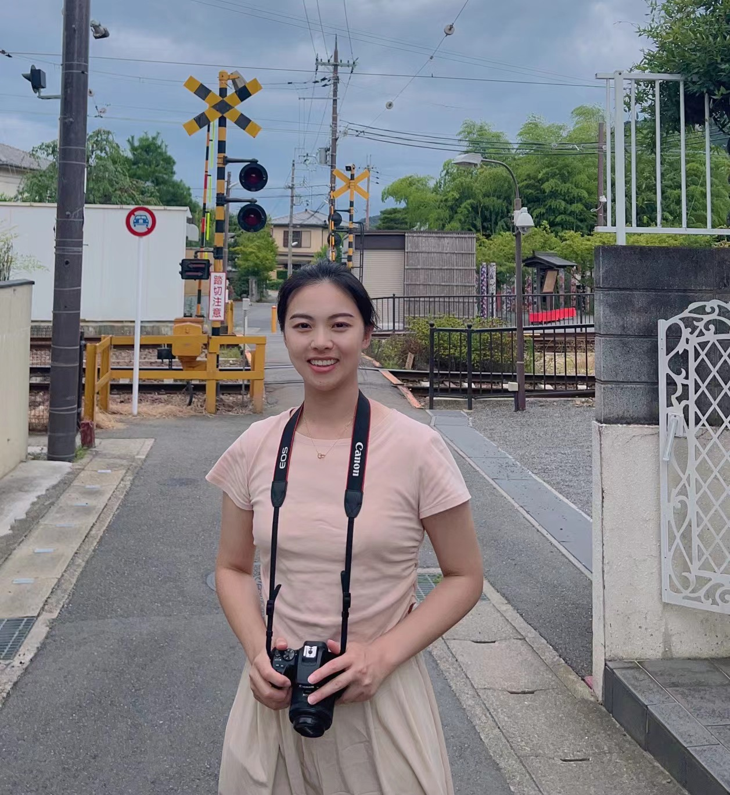

{kind=link}
Mengqi Li (李梦琪)
Master's Degree from the Department of English, Interdisciplinary Studies of Linguistic Sciences Research Center from the University of Science and Technology of China (USTC)Email: mengqili2022@gmail.com

|  |
Mengqi Li (李梦琪)Master's Degree from the Department of English, Interdisciplinary Studies of Linguistic Sciences Research Center from the University of Science and Technology of China (USTC)Email: mengqili2022@gmail.com
|
Hi there! My name is Mengqi Li.
My main research interests lie within technology-based education, education equity & diversity, second language acquisition, corpus linguistics, translation studies.
I received my M.S. degree in Department of English, Interdisciplinary Studies of Linguistic Sciences Research Center from the University of Science and Technology of China in June 2019, under the supervision of Professor SUN Lan and Lecturer LI Lanlan.
After graduating, I spent three years working in the Media and Communications Department at ZTE Corporation, a prominent Chinese multinational technology enterprise, followed by a year as an English Lecturer at Anhui Xinhua University. In those four years, I witnessed the transformative power of technology while also becoming acutely aware of gender disparities.
These experiences and reflections prompted me to launch marketing campaigns both within and outside ZTE, with #Digitalization and #WOMENINZTE. These efforts aimed to amplify the voices of women in the tech industry. Additionally, during my time as an English Lecturer, I strived to integrate technology and education, harnessing the potential of individuals, especially women, to address the inequalities within the education sector.
Now, I am relocating to Los Angeles in the near future and am actively seeking opportunities for doctoral studies in the United States.
| [ICWL] |
Corpus-based Translation Pedagogy: A Preliminary Case Study.
Mengqi Li, Dongxia Pan In International Conference on Web-based Learning (ICWL), 2023. [paper] |
|
| [Paper] |
Evaluating the Translatability Boundaries of "Lyrics to the Adagio of Resonance" through Xu Yuanchong's Three Beauties Theory.
Mengqi Li In Times Education (ISSN: 1672-8181), 2023. [paper] |